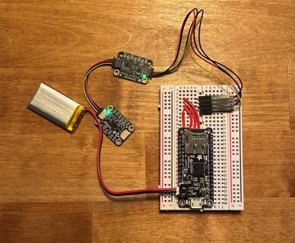

Smart Rock
(April 2023 - Present)
Self-Guided Project
When I was in graduate school, I ended up picking a thesis topic that culminated in a simulation. This meant that it would not be an opportunity for me to implement, test and validate software for a real, physical system. The Smart Rock is my first stab at implementing a Kalman Filter in real time. It uses an Arduino (specifically an Adafruit Feather) with a pressure altimeter as well as a 3-axis accelerometer to estimate its vertical position and velocity after being thrown directly upward.
Modeling & Simulation
The first thing to do before buying any hardware is to simulate the system. A projectile has a pretty manageable mathematical model that describes its state \(\mathbf{x} = \begin{bmatrix}x(t), \dot{x}(t)\end{bmatrix}^T\) once you assume that its motion is vertically constrained and subject only to its initial conditions, the force of its own inertia, and the force of gravity:

$$ \dot{\mathbf{x}} = A\mathbf{x} + Bu(t) = \begin{bmatrix} 0 & 1 \\ 0 & 0 \end{bmatrix} \mathbf{x} + \begin{bmatrix} 0 \\ 1 \end{bmatrix}(a(t) - g) $$
$$ y(t) = C\mathbf{x} = \begin{bmatrix} 1 & 0 \end{bmatrix} \mathbf{x}. $$
From the measurement equation \(y(t)\), I plan to take a height measurement of the projectile over time. To make sure that only a height measurement is sufficient to get a complete and bounded state estimate, we perform an Observability Analysis:
$$ \mathcal{O} = \begin{bmatrix} C \\ CA \end{bmatrix} = \begin{bmatrix} 1 & 0 \\ 0 & 1 \end{bmatrix}. $$
The rank of the Observability matrix, \(rank(\mathcal{O}) = 2\) which equals the dimension of the system's state. A pressure altimeter will be sufficient to estimate the height and velocity of the projectile over time, and the accelerometer will track the force input to the system over time. The sensors will both sample at the same interval, every \(\Delta t\) = 0.1 seconds. We can use this to discretize our continuous model into something we can integrate with the microcontroller, where \(t = k\Delta t\). I've also added some noise values to make the simulation more realistic:
$$ \begin{bmatrix} x_{k+1} \\ \dot{x}_{k+1} \end{bmatrix} = \begin{bmatrix} 1 & 0.1 \\ 0 & 1 \end{bmatrix} \begin{bmatrix} x_{k} \\ \dot{x}_{k} \end{bmatrix} + \begin{bmatrix} 0.005 \\ 0.1 \end{bmatrix}(a_k - g) + \begin{bmatrix} w_x \\ w_{\dot{x}}\end{bmatrix} $$
$$ y_k = \begin{bmatrix} 1 & 0 \end{bmatrix} \begin{bmatrix} x_k \\ \dot{x}_k \end{bmatrix} + w_y, $$
where \(w = \text{normrnd}(\mu,\sigma)\) where \(\mu = \text{0}\) for all noise values, \(\sigma_x = \text{5 m}\), \(\sigma_{\dot{x}} = \text{5 m/s}\) and \(\sigma_y = \text{10 m}\).
The Kalman Filter Algorithm
The standard Kalman Filter uses a linear state-space model at the present state \(\mathbf{x}_k\) to predict what the next state \(\mathbf{x}_{k+1}\) and its measurement uncertainty will be. Then, it uses the collected measurement \(\mathbf{y_k}\) along with some statistical constructs to provide an updatethat ends up placing the final estimates closer to the ground truth than the prediction alone:
$$ \begin{align} \bar{\mathbf{\hat{x}}}_{k+1} &= A\mathbf{\hat{x}}_k + Bu_k & &\text{Predict State Estimate} \\ \bar{\Sigma}_{k+1} &= A\Sigma_kA^T + R & &\text{Predict State Covariance} \\ \\ K_{k+1} &= \bar{\Sigma}_{k+1}C^T(C\bar{\Sigma}_{k+1}C^T + Q^T)^{-1} & &\text{Compute Kalman Gain} \\ \\ \mathbf{\hat{x}}_{k+1} &= \bar{\mathbf{\hat{x}}}_{k+1} + K_{k+1}(y_k - C\bar{\mathbf{\hat{x}}}_{k+1}) & &\text{Update State Estimate} \\ \Sigma_{k+1} &= (I - K_{k+1}C)\Sigma_k & &\text{Update State Covariance} \end{align} $$
Where \(A\), \(B\) and \(C\) are the state-space model vectors, \(u_k\) is the control input to the system, \(\mathbf{\hat{x}}_k\) is the state estimate, \(\Sigma_k\) is the state covariance, \(K_k\) is the Kalman Gain, \(Q\) is the measurement covariance, and \(R\) is the process noise of the state. This algorithm is executed every timestep.
The Kalman Filter is a specific case of a broader type of estimators called Bayesian Estimators because it uses prior knowledge to get its estimate. In practice, this is where the KF predicts what its next state will be as a result of its present state, and also where the state covariance provides some knowledge of how good its previous estimates were.
The KF and its relatives (Extended, Unscented, Ensemble, etc.) are popular because of how fast they run in concert with all the other instrumentation. When you compare it with another Bayesian Estimator like the Particle Filter, getting an estimate takes less computational power. In addition, the KF is optimal for linear systems; it is the best you can do.
I ran a 5-second simulation on the projectile, starting at zero height and 25 m/s velocity. I even provided an initial state estimate of 10 m and 0 m/s, just to try and throw the KF off at the beginning:
The resulting simulation can be seen above. You can see that in the projectile height (position) graph, the Kalman Filter does some modest de-noising, but the velocity graph is really where it shines. The noisy magenta line is the sensor output that I've differentiated numerically. I did this just to get an idea of how unreliable that signal would be when you compare it with the KF's estimate.
Another interesting set of figures to look at is the Bayesian Mean Square Error (BMSE) as well as the error of both the sensor alone and estimated position value, compared to the simulation's ground truth: It's pretty neat to see the BMSE converge to something close to zero, which shows me that the KF is able to estimate with more confidence as the simulation goes on. The estimated position is also arguably better than just the raw sensor data, but again, de-noising is only one aspect of this algorithm.More Details from the Simulation
Hardware
I got the microcontroller and all my sensors from Adafruit. The microcontroller is an Adafruit Feather M0 Adalogger, which is your standard Arduino-type device, with an SD card slot attached:
For this project, recording data is critical for validation, and this board lets me insert a micro-SD so I can print all the data to a .txt file on the card. I used this particular microcontroller during a previous job where I took tempearture and accelerometer data, so it was something that I was already familiar with. The accelerometer that I used was an Adafruit breakout for the LIS3DH, a 3-axis accelerometer with measurement settings 2g, 4g, 8g and 16g for different use cases and measurement accuracies:
I also used this particular sensor during my previous job, so calibration and implementation went smoothly. Other than that, this seemed like a pretty standard accelerometer. Last but not least, the pressure altimeter was another Adafruit breakout for the DPS310 Barometric Pressure Sensor:
I picked this sensor because I thought it had a reasonable amount of accuracy, and had StemmaQT connectors which meant I could daisy chain my sensors together instead of soldering everything onto a breadboard and risk breaking contacts. Like the LIS3DH, it was not tough to configure, and its I2C address didn't conflict with the LIS3DH, thankfully. These three pictures are from the Adafruit website--give one of them a click and it'll bring you right to the product page where I bought them!
After adding a battery for untethered use, the Smart Rock looks like this:
Software
The process for configuring and implementing the sensors and devices, integrating them with the Kalman Filter and printing them out for validation followed a pretty linear development pattern which you can see below:
Sensor/Device Configuration/Calibration
For the accelerometer, I selected the 4g measurement setting and normalized the raw data value to \(g = 9.81 m/s^2\). It also takes measurements across all 3 spatial axes, so I used them to get the resultant acceleration so that the orientation of the sensor wouldn't factor in.
For the pressure altimeter, I decided to hard-code the calibration and normalize every reading to an idealized pressure at sea level. The thing that really matters here, for this particular situation is that relative heights get measured--you can always set a different zero height in postprocessing.
To take this data, I held the altimeter stationary and took a sample at every interval. You can clearly see that there is some drift over a few centimeters that happens over time, which is something I didn't notice when I programmed the microcontroller the first time.
The SD card reader was pretty simple to implement. Every time the microcontroller gets initialized, it adds data to the end of a .txt document called "TEST". If it doesn't exist, it creates one.
These sensors could use better calibration. In a future version of this project, I'd like to investigate the behaviors of both sensors by finding their Allan Variances
To construct the Kalman Filter, I used an Arduino library called BasicLinearAlgebra.h by Tom Stewart for adding, multiplying, transposing and inverting matrices. More content in this section to come!
Testing & Results
After the software was done, the only thing left to do was test. When I ran this specific test it was cold out and I had to stay in my room, so these throws are really shallow. Luckily, that doesn't matter so much. In fact, it even makes the case for the KF, because when compared with the raw sensor measurements, it does a good job at denoising and a great job at integrating for the velocity estimate:
I was pretty happy with how this first pass went. I think I picked a model that was manageable enough to let me work through the other things without any huge problems. In the future, I'd like to add more sensors and maybe a few actuators. I'd like to also do a direct comparison between the simulation and the hardware down to the initial throw velocity, just to be thorough.
Questions & Answers
You could definitely do this with just an accelerometer. Why didn't you do that?
I know. I didn't consider it when I first designed the project, and it would add complexity in the simulation and the software that I don't want to deal with yet. It would also add a lot of noise to the measurements.
What happens if I throw it with some horizontal component?
The estimate will be poor because the model doesn't account for it. A logical next step for this project is to add that consideration to the model so that you can play catch with it, or something like that.
If wind blows on the pressure altimeter, will that affect the estimate?
Yes, and obviously this effect will be more pronounced at higher wind speeds. It needs to sit behind some kind of grate to baffle that incoming wind.
Is this project useful?
It's not particularly useful as-is. I think this will serve as a great platform for any future projects I may have of a similar style though, because in doing all this carefully I've done many basic things that I won't have to worry about if I decide to do something more complicated. This state estimator is home-grown, so I won't have to waste any time weeding through documentation just to understand how someone else wrote theirs.
References
Kay, S. M., Fundamentals of Statistical Signal Processing: Estimation Theory. Prentice Hall Signal Processing Series, 1993.
Thrun, S., Burgard, W., and Fox, D., Probabilistic Robotics (Intelligent Robotics and Autonomous Agents). The MIT Press, 2005.